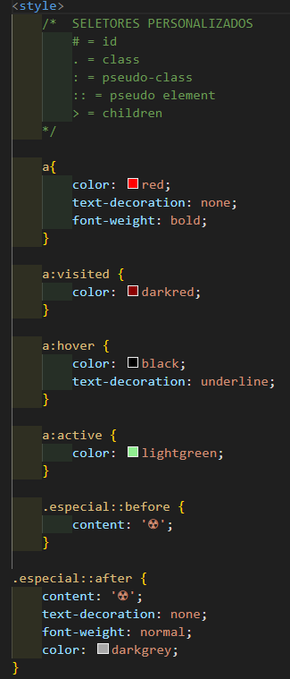

Para personalizar um link, deve-se criar um estilo para ele com CSS e fazer as declarações que definirão seus padrões.
Quando um link é acessado, ele muda sua cor original para uma cor mais escura, para mudar isso, é necessário colocar a pseudo-classe a:visited e definir como o link irá ficar a partir dai. Caso sua vontade seja não diferenciar um site visitado de um não visitado, é so manter a configuração padrão das cores.
Para indicar que um elemento é um pseudo-elemento, deve-se colocar :: dois pontos duas vezes.
A personalização dos links ocorre da seguinte forma.

a{ //indica o elemento a ser editado, nesse caso o link
color: red; //muda a cor do elemento selecionado
text-decoration: none; //tira a decoração de texto do elemento selecionado
font-weight: bold; //muda o peso da fonte do elemento selecionado
}
a:visited { //pseudo-classe do elemento selecionado, essa significa que é uma configuração sendo feita para um link JÁ visitado
color: darkred; //cor que o link JÁ VISITADO terá
}
a:hover { //pseudo-classe que indica como o elemento irá se comportar quando o mouse for passado em cima
color: black; //cor que o elemento terá quando o mouse for passo em cima
text-decoration: underline; //decoração de texto que o elemento terá quando o mouse for passado em cima
}
a:active { //pseudo-classe que indicá como o elemento irá se comportar quando for clicado
color: lightgreen; //cor que o elemento selecionado terá ao ser clicado
}
.especial::before { // .especial é uma classe criada para um elemento específico, isso indica que essas configurações só se aplicarão ao elemento com a class especial, e before indica o que aparecerá antes do elemento
content: '☢'; //conteudo do before
}
.especial::after { //mesma explicação do de cima, porém com a tag after, que indica o que aparecerá após o elemento
content: '☢'; //conteúdo que aparecerá no after
text-decoration: none; //revome toda a decoração de texto
font-weight: normal; //define o peso da fonte
color: darkgrey; //define a cor do elemento
}
Voltar á página inicial